State, Inventory & Graph-based Horizon Tracker for Localized Information & Narrative Events • Official User Manual • © 2026 Nikhil Bhardwaj
YOU ARE HERE state card.Branch B/C). Any branch you load, edit, or merge is permanently promoted to a solid card.0–100 Dramatic Tension Score (Cold Indigo, Rising Emerald, Hot Amber, Climax Crimson).Canon vs. Ghost) side-by-side across locations, items, secrets, blind spots, and trust edges./Manuscript prose editor with Zen Mode, Fair-Play Reader Ledger, Leak Scanner, Retro-Con Sync, and .fountain / .ink / .yarn / .doc exporters.World_Bible.md.Episodic_Archive.json..md state file for the selected card.📌 Branch Selected to branch from any clicked card, or 📍 Continue Active to advance from YOU ARE HERE. Toggle 🌍 Mode: @world_turn between chapters to advance off-screen factions in 1 GM call.#1, #2, #3) and the Dormant Green Room (💤). Dormant characters consume 0 tokens and are sliced out of active prompts so active characters never get meta-spoilers.🌌 Parallel 2-Branch Run ▾ below the Run button, pick any two timeline states, and click Execute Parallel Multi-Branch Run to test your Scene Nudge across both timelines side-by-side!
🎴 Salience Storylet Deck to pre-write dramatic set-pieces with optional Location, Item, or Clock prerequisites. When the current state satisfies a card's prerequisites, it glows in Acid-Lime (⚡ Ready)—click it to inject its Scene Nudge into the Console!📂 Project, Demo, Ingest & Backup. Click 🎬 Load Demo: The Obsidian Express (0 LLM) to scaffold a complete playable mystery in 0.0s, or click ⚡ Auto-Ingest Synopsis / Chapter (1 GM) to paste raw story text and automatically generate Turn_0_Initial.md, World_Bible.md, and Voice_Anchors.md!📦 Export .zip to download a timestamped archive of your entire project, or 🕰️ Time-Capsule to export a read-only interactive HTML storyboard to share with editors.
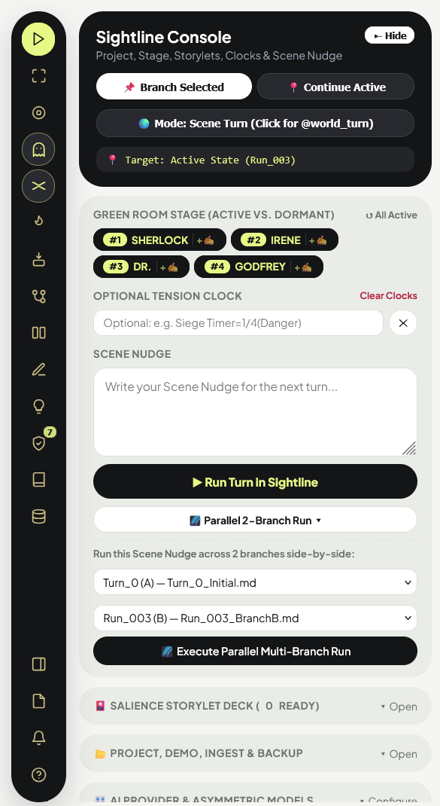
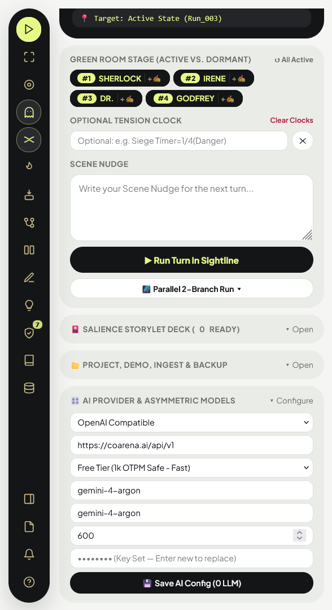
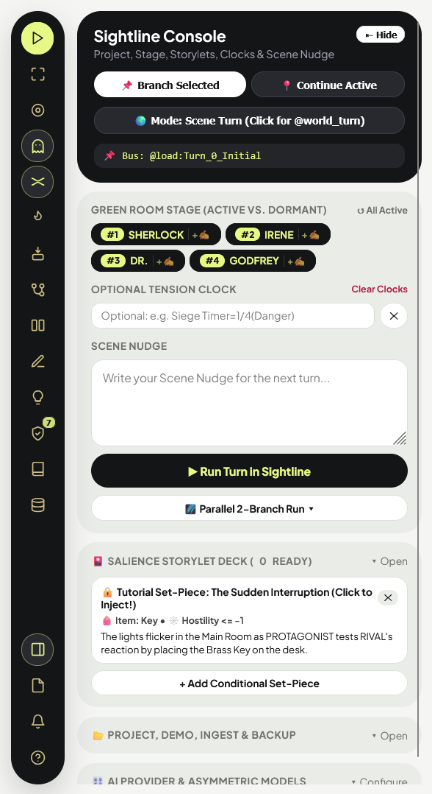
👁️ Lens: Omniscient ▾ in Top Bar)👁️ POV: VICTOR KANE) from the Top Bar dropdown. In 0.0s (0 LLM Calls), the entire studio filters into that character's subjective reality:💤 Dormant dims to grayscale.✕ Blocked zones or concealed behind cover become ? UNKNOWN on the 2D Stage Map.🙈 Blind Spots), a dashed violet pill (👻 Key) appears on their row showing they still falsely believe they hold it!✕ Exit to Omniscient View on the violet banner to return.
🏺 Provenance Button) + 🔥 Todorov Pacing Heatmap (🔥 Rail Icon)🏺 Provenance in the Top Bar (or click any item pill like 🗝️ Key or 📔 Ledger on a character row) to trace that item across the entire story tree: where it was planted on Turn 0, every custody transfer between characters, its current zone, who secretly knows where it is, and who holds a 👻 Phantom Belief about it.🔥 flame icon on the Left Rail to highlight every State Card with its 0–100 Dramatic Tension Score (computed from state deltas, clock fill ratios, hostility swings, and room convergences) so you can spot "Cold" pacing lulls vs. "Climax" spikes across your act structure.
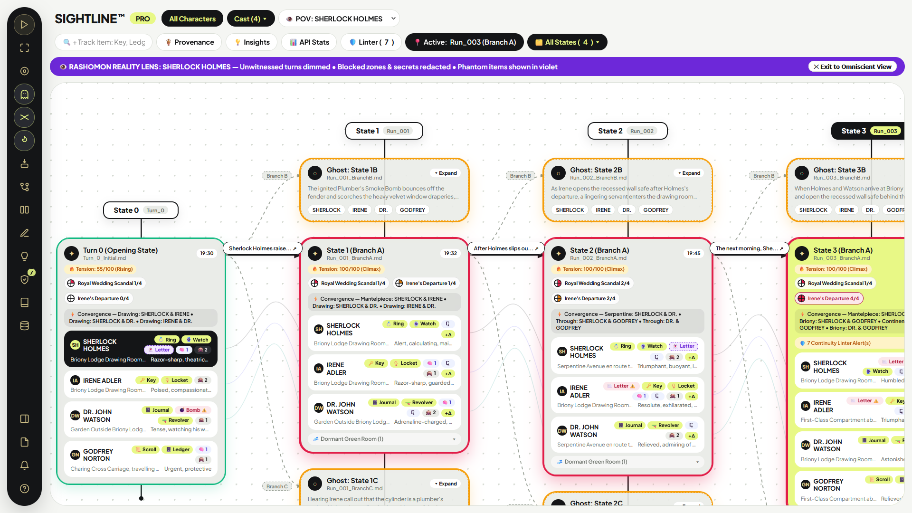
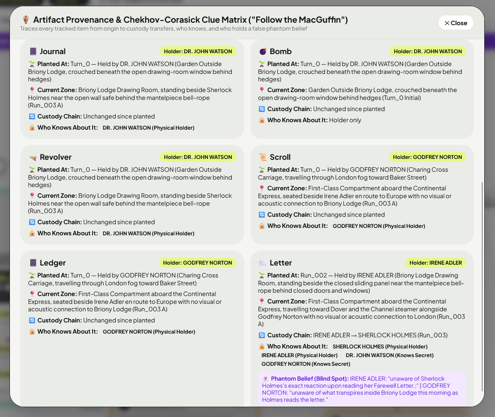
⑂ Icon)⚡ Simultaneous Arrival, 🥇 Branch 1 Arrives First, or 🥈 Branch 2 Arrives First. SIGHTLINE automatically stamps who secured initial room cover and sightline advantage into Global World Facts!Synthesize Knowledge & Items) and click 💾 Save Merged State Card Only (0 LLM Calls).
⚖️ Rail Icon)⚖️ on the Left Rail (or ⚖️ Diff Matrix in the Right Inspector) and choose any two State Cards in the left and right dropdowns to compare their exact Outcome Summaries, Tension Clocks, Locations, Inventories, Secret counts, Blind Spot counts, and Trust/Fear scores in a highlighted side-by-side table.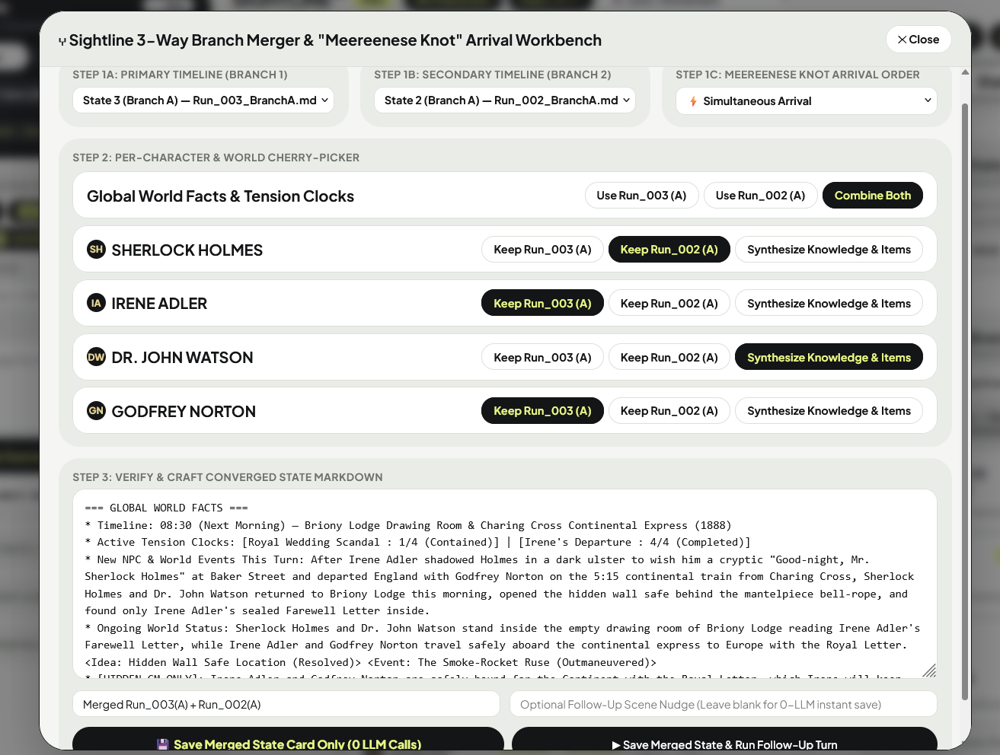
/Manuscript Editor, Zen Mode, Leak Scanner & Retro-Con Sync (✎ Icon)<project_folder>/Manuscript/Scene_<node_id>.md on your hard drive. Use the toolbar for Bold, Italic, H1/H2, * * * Scene Breaks, Aa Serif book typography, and ⛶ Zen Mode full-screen writing while tracking live word count, reading time, and session progress.0 LLM): Scans your drafted prose against the active POV character's 🙈 Blind Spots and warns you in crimson if your draft accidentally mentions an item or secret the character doesn't know!1 GM Call): Improvised a new detail while writing prose (e.g., a character dropped their key or revealed a secret)? Click 🔄 Retro-Con Sync to State to extract those changes from your prose and patch them back into the State Card in 1 click!
🎥 Active POV Camera to filter the blueprint to their perspective and view the Agatha Christie / Rian Johnson Fair-Play Ledger—showing planted artifacts, active dramatic irony (Reader Knows vs. POV Knows), and flagging any unplanted Deus Ex Machina items.🔗 Trace Timeline Path, then use the ◀ and ▶ arrows on any beat pill in the NARRATIVE BEAT ORDER bar to arrange flashbacks (automatically tagged ⏪) while the Linter still validates chronological causality!⬇ .md, ⬇ Obsidian, ⬇ Word (.doc), 🎬 .fountain (Screenplay), 🎮 .ink (Inkle), or 🧶 .yarn (Yarn Spinner).
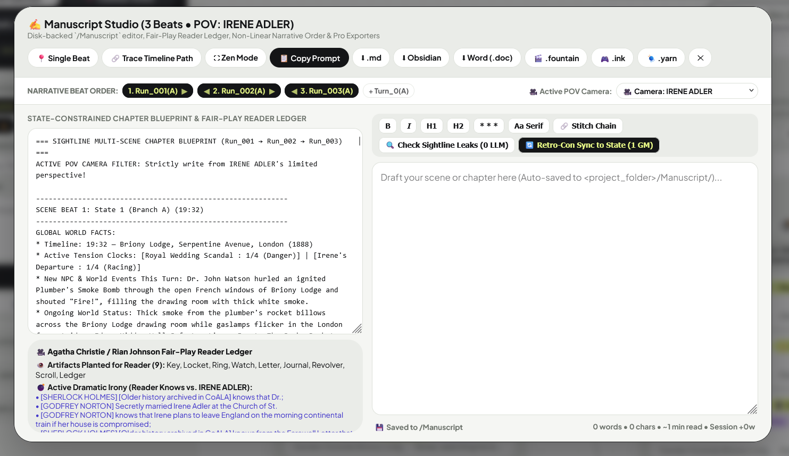
🛡️ Icon)🛡️ Linter in the Top Bar or Left Rail to audit every causal chain from Turn_0 forward:<Idea: Stolen Ledger> or <Event: Border Crossing> in World Facts. If any MICE thread or Tension Clock goes $\ge 4$ consecutive turns without progress, the Linter flags a Cold Trail alert.🚩 Flag Descendant Turns.
⏱️ Micro-Chronology Timetable tab to view a complete Character × Clock-Time Location Grid (23:40, 23:50, 00:00) across your timeline. If an active character jumps between opposite zones faster than the turn's elapsed clock time allows, the Linter flags 🏃 Impossible Transit Velocity.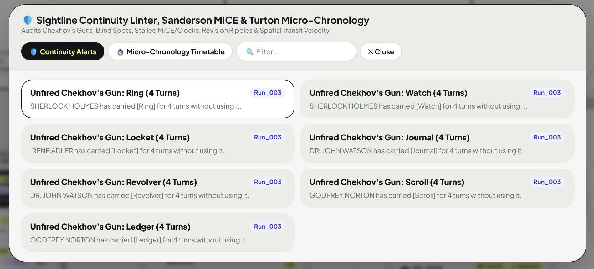
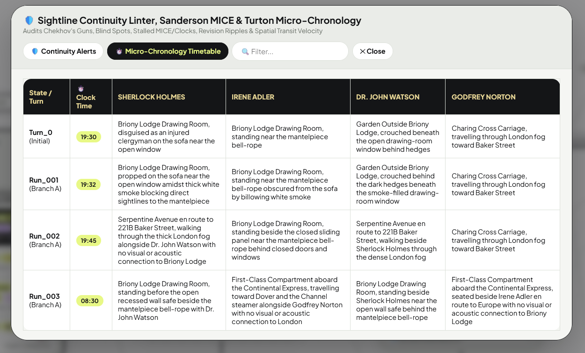
💡 Icon)💡 Insights in the Top Bar or Left Rail to inspect 4 real-time analytics panels:Branch A (Canon), Branch B (High Chaos), and Branch C (Strategic Twist).0–100 Drift Score). Click 🧠 Run AI Deep Thematic Audit (1 GM) for a full psychological breakdown.🔒 + 🙈) or Tension than your chosen branch.Hard Never-Rules in Voice_Anchors.md, and warns if two characters' cadences start sounding identical.
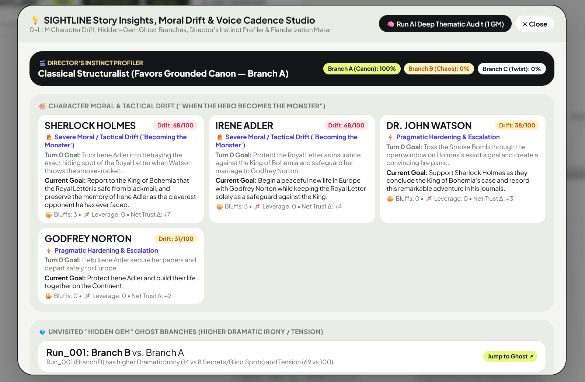
📌 Icon)📌 on the Left Rail to pin untethered future destination beats onto your canvas (📌 Pin Floating Beat to Canvas). When you want to figure out how to get your characters from their current state to that future beat without plot contrivances, click 🎯 Solve Causal Bridge (1 GM) to compute 3 physically legal pathways (Path A / B / C) and load Step 1 straight into your Scene Nudge!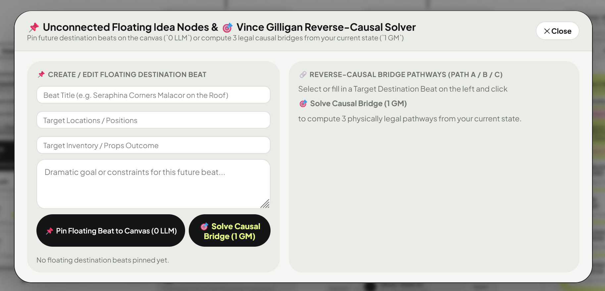
▤ Icon)+ Add Lore Entry (or click any lore card to edit). Set the Title, comma-separated Trigger Keys, integer Priority, and check Constant if the law applies to every turn. Click 💾 Save Lore Entry to World_Bible.md (0 LLM).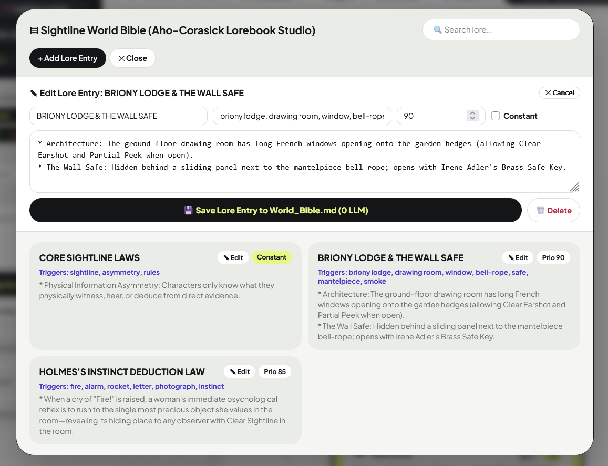
◈), 🔥 Hades Salience Impulse & State Directory (🗂️)[Closed Paths/Constraints] in Episodic_Archive.json and scores every memory and trust/clock delta using Supergiant's (Hades) Reactive Salience Priority Queue—injecting the #1 highest-scoring unaddressed event as 🔥 TOP SALIENCE IMPULSE into the character's prompt. Use 🗂️ All States (N) ▾ in the Top Bar to jump to any State Column.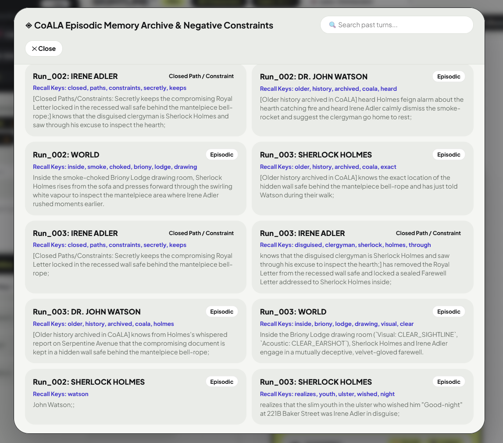
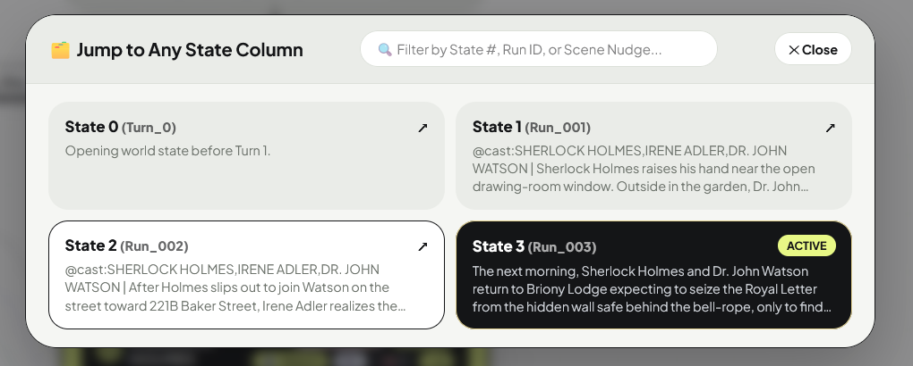
Cast ▾ Button)Ctrl + Click (or click ✓ / +) to highlight multiple characters' swimlanes simultaneously.✎ Voice / Delete): Click ✎ Voice / Delete on any character card to rename them across the entire project or update their immutable Voice Anchor.✎ Voice / Delete drawer, click 🗑️ Delete Character... to choose between two safe options (with an automatic rolling backup created first):Turn_0_Initial.md, all Run_XXX files, Voice_Anchors.md, and relationship edges in 0.0s.+ Spawn Character): Introduce new characters mid-book into the active state and Voice_Anchors.md with 0 LLM Calls.
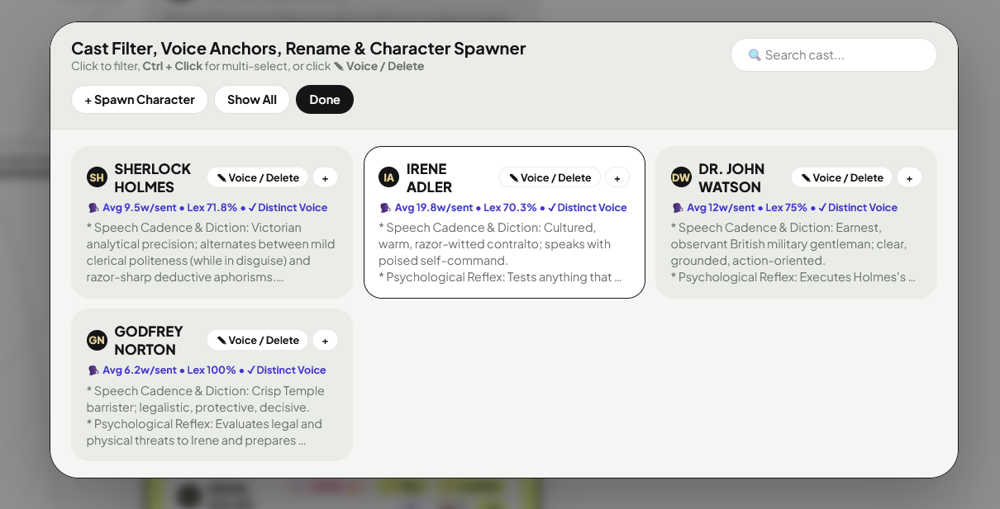
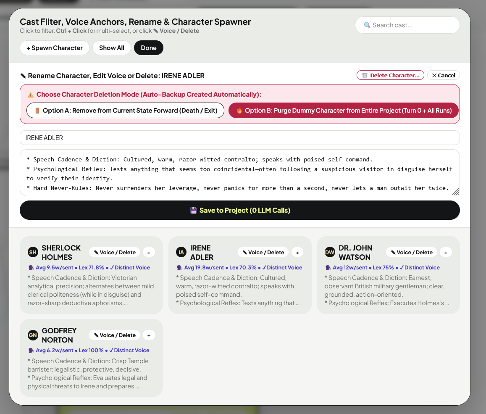
State & Diffs — 2nd-Order ToM Badges, Phantom Items & 🌊 Downstream Revision Ripple🧠 2nd-Order ToM when a character holds beliefs about another character's mind), Relationships, Core Motivation, and the Immutable Voice Anchor. Click ✎ Edit on any card to open the God-Mode inline editor and select your Downstream Revision Ripple Mode: 📍 Edit This State Card Only, 🌊 Propagate Edit Downstream (updates child turns automatically), or 🚩 Flag Descendant Turns in Linter.Turn Action — 🛡️ EAST Guard, 🤥 Subtext Lie-Detector, 🎧 Offline Table-Read & 🎙️ Interrogation / Split-Mind🛡️ EAST Guard: CLEAN / INTERCEPTED and classifies spoken dialogue into 🤥 Active Bluff, 🛡️ Deflection, 🗡️ Leverage Play, 🔇 Silent, or ✓ Candid—plus whether listeners in earshot 🙈 Bought the Lie or 👁️ Clocked the Tell.🎧 Full Scene (reads Scene Nudge + each active character's Action & Dialogue + Scene Outcome) or 💬 Dialogue Only. While a character speaks, their live caption appears and their monogram pulses on the 2D Stage Map! Click ⏹ Stop to halt audio instantly.🎙️ Interrogate Agent to interview the character locked strictly inside their current epistemic state, or click 🧠 Split-Mind Debate to trigger a 3-voice Disco Elysium internal argument between their Core Motivation, Paranoia & Fear, and Voice Reflex!
World & Audit — 🕵️ Red-Team This Scene, 🌩️ Weather Forecast Oracle, Clocks & CoT Trace1 GM Call): Challenges the current scene from the perspective of a skeptical beta-reader to find the top 3 "Why didn't Character X just...?" plot holes—each with a 1-click + Patch World Bible (0 LLM) button to seal the shortcut!0 LLM or 🎲+AI): Computes non-destructive Clock Detonation probabilities, active Convergence Zones, volatile Trust/Fear pairs, and optional 3-roll Monte Carlo lookahead trajectories.
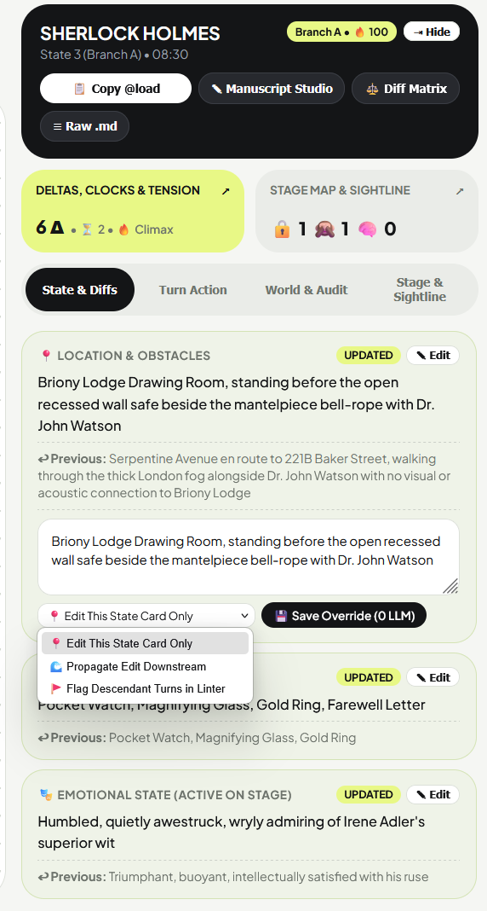
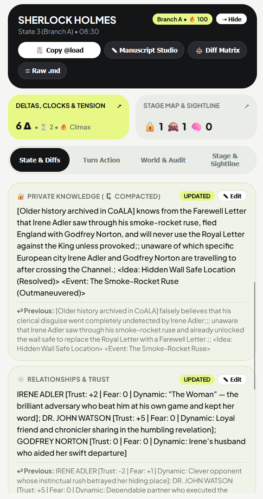
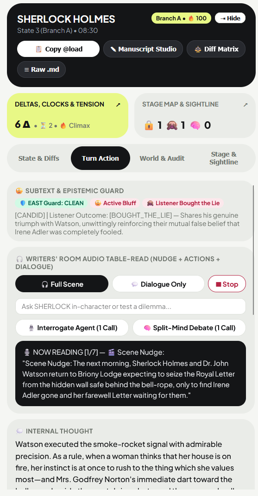
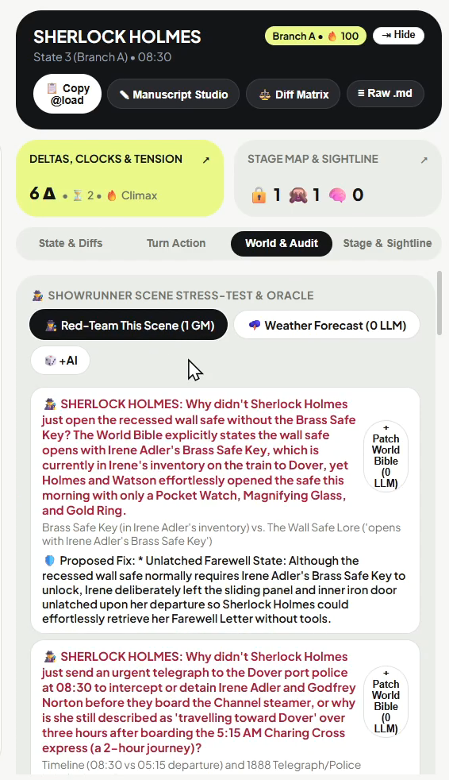
Stage & Sightline (Dual Visual/Acoustic Map)👁️ Visual & 👂 Acoustic 2D Stage-Blocking Map, Custom Zone Pinning & Social Dominoes👁️+👂 Both, 👁️ Visual, and 👂 Earshot at the top of the 2D Stage Map:
━ Clear Sight (Green) for unobstructed same-room line of sight,
┅ Clear Earshot (Blue Dashed) for audio range,
┅ Partial Peek / Overhear (Amber Dashed) across an ajar door, partition, or air vent, and
✕ Blocked (Red) for separated zones. Characters who took silent actions without speaking display a 🔇 badge.📌 Pin Zone to manually assign or lock a character's room name in stage_layout.json.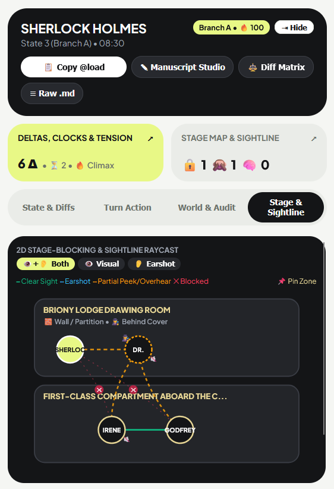
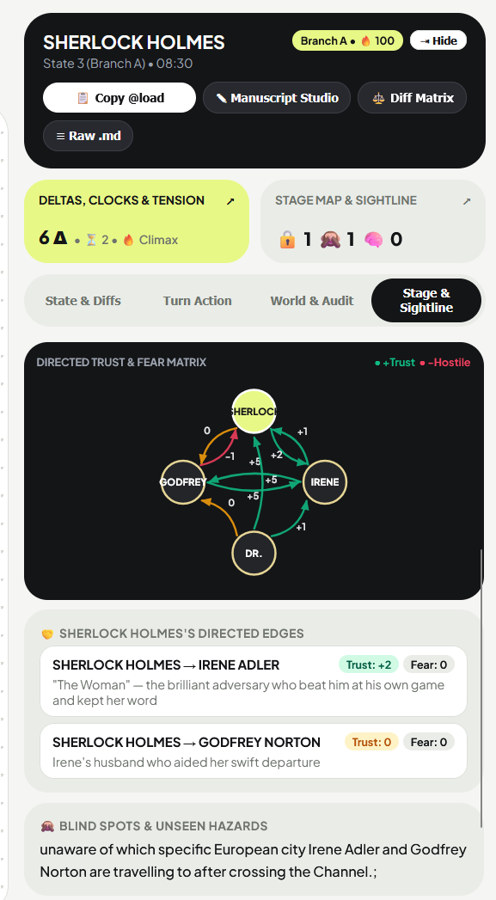
Char Model vs. GM Model) — Saves 65–80% on API CostsChar Model): Runs once per active character on stage (~150 tokens output). Use fast, low-cost models (gpt-4o-mini, claude-3-5-haiku, gemini-2.5-flash, qwen/qwen3.8-27b, or local llama3.1:8b).GM Model): Runs once per turn to adjudicate sightline collisions, write Branch A / B / C, and power opt-in Showrunner tools (Red-Team, Reverse-Causal Solver, Retro-Con). Use your strongest reasoning model here (openai/gpt-oss-120b, gpt-4o, claude-3-7-sonnet, gemini-2.5-pro).
▶) and click 🎛️ AI Provider & Asymmetric Models.OpenAI Compatible (Groq / OpenRouter / DeepSeek): For Groq (fast & free tier available at console.groq.com/keys), keep Base URL as https://api.groq.com/openai/v1, set Char Model to qwen/qwen3.8-27b (or llama-3.3-70b-versatile) and GM Model to openai/gpt-oss-120b. For OpenRouter (openrouter.ai/keys), set Base URL to https://openrouter.ai/api/v1.Gemini (Google AI Studio — Free Tier Available): Get a key at aistudio.google.com/apikey. Base URL auto-fills to Google's endpoint; set Char Model to gemini-2.5-flash and GM Model to gemini-2.5-pro.OpenAI: Get a key at platform.openai.com/api-keys. Set Char Model to gpt-4o-mini and GM Model to gpt-4o.Anthropic: Get a key at console.anthropic.com. Set Char Model to claude-3-5-haiku-latest and GM Model to claude-3-7-sonnet-latest.💾 Save AI Config (0 LLM), and click 🔌 Test AI Connection to verify!Local Mode):ollama.com.ollama run llama3.1:8b (or ollama run qwen2.5:14b).🎛️ AI Provider & Asymmetric Models, select Local, keep Base URL as http://127.0.0.1:11434/v1, type llama3.1:8b in both the Char Model and GM Model boxes (leave API Key blank), click 💾 Save AI Config, and click 🔌 Test AI Connection!lmstudio.ai, download any model, and start the Local Server on port 1234.Local, set Base URL to http://127.0.0.1:1234/v1, enter your loaded model's name, and click 💾 Save AI Config.
📊 API Stats Dashboard & 🔒 Zero-Leak API Key Isolation📊 API Stats Button (Top Bar): Inspect exact Input, Output, and Thinking token counts, per-agent latency, 💤 Green Room token savings, and 🛠️ 0-LLM Fast-Path edits.~/.sightline_secret_key.json)—never inside your book project folder, Story_Flowchart.html, or 📦 Export .zip archives. You can share project folders and Time-Capsule HTML files with editors with 0% risk of exposing your API key.
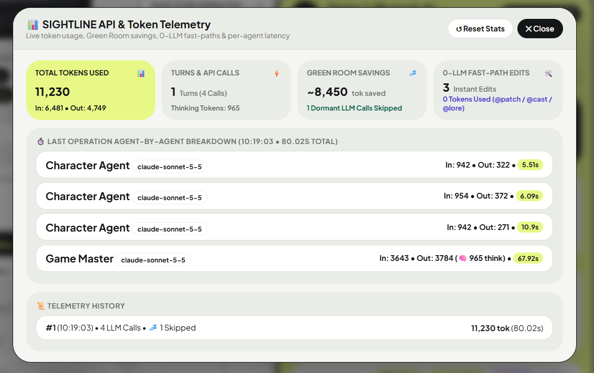
▶) on your current computer and scroll to the bottom footer.🔑 [Your Name] • SIGHTLINE™ © 2026 Nikhil Bhardwaj license badge at the bottom of the drawer (requires an active internet connection so Lemon Squeezy can release your seat).Branch B or C) turn into a solid card?📌 Branch Selected), edit (✎ Edit), or merge a Ghost branch, SIGHTLINE™ permanently promotes it into a Canon State Card so you never lose a branch you worked on—even when Ghost branches are hidden.Local to run local models via Ollama or LM Studio at $0.00 cost, or use free-tier API keys from Groq, Google Gemini AI Studio, or OpenRouter.~/.sightline_secret_key.json) so exporting a project .zip never leaks your API key.
Branch B or Branch C) turn into a solid card?Branch A (Canon) and two dashed Ghost Cards (Branch B: High Chaos and Branch C: Strategic Twist). The moment you time-travel to a Ghost Card (📌 Branch Selected), edit it (✎ Edit), or merge it (⑂), SIGHTLINE™ permanently promotes it into a solid Canon State Card so you never lose a timeline you worked on—even when you click ◌ to hide untouched Ghost branches.📌 Branch Selected and 📍 Continue Active in the Left Console?📍 Continue Active always advances the story from your Acid-Lime YOU ARE HERE card. 📌 Branch Selected lets you click any historical card or Ghost node on the canvas and spawn a brand-new timeline branch from that exact point in time.Cast (N) ▾ in the Top Bar. Click a character card to solo their swimlane, or hold Ctrl + Click (or click the + / ✓ badge) to highlight multiple characters' colored cubic-Bézier threads simultaneously.🔍 + Track Item: Key, Ledger...). SIGHTLINE™ immediately scans all character inventories across every turn and badges those items with live pills.
🙈)?Private Knowledge field (or via God-Mode ✎ Edit), phrase unknown facts or false beliefs using explicit epistemic cues such as "unaware that...", "does not know...", "falsely believes...", or "assumes that...". SIGHTLINE™ automatically routes those clauses into 🙈 Blind Spots, shields them via the 🛡️ Pre-GM EAST Guard, and enforces them in the Manuscript Studio.=== GLOBAL WORLD FACTS ===, prefix the line with * [HIDDEN GM_ONLY]: ... (for example: * [HIDDEN GM_ONLY]: Victor wired an explosive charge under the floorbolt). SIGHTLINE™ physically strips [HIDDEN GM_ONLY] lines from all Character Agent prompts while keeping them visible to the GM Auditor!💤)?0 LLM calls and 0 tokens. Their state blocks are sliced out of active character prompts so active characters cannot meta-game. However, the GM receives a 1-line digest of their location and traps—so if an active scene makes loud noise near a dormant character's room, the GM automatically emits a +💤Δ ripple update for them.👁️ Lens: Omniscient ▾ (Rashomon Filter) dropdown in the Top Bar do?0.0s (0 LLM Calls): turns where they were 💤 Dormant dim on the canvas, characters in ✕ Blocked rooms become ? UNKNOWN on the 2D Stage Map, other characters' secrets are redacted, and stolen items they still think they hold appear as Violet Phantom Pills (👻).🔄 Retro-Con Sync to State (1 GM) in the Manuscript Studio toolbar. SIGHTLINE™ compares your drafted prose against the State Card, extracts any new state changes you improvised, and lets you patch them back into the State Card in 1 click!📌 Floating Beat and use 🎯 Vince Gilligan's Reverse-Causal Solver?📌 icon on the Left Rail (below the 🔥 flame icon). Enter your future destination scene's Title, Target Locations, and Target Inventory, then click 📌 Pin Floating Beat to Canvas (0 LLM). Whenever you want to bridge your characters from their current state to that future scene, click 🎯 Solve Causal Bridge (1 GM) to generate 3 physically legal pathways (Path A / B / C).🎧 Table-Read Scene read out loud, and does it cost any API tokens?$0.00 token cost). 🎧 Full Scene reads the Scene Nudge, each active character's Intended Action and Spoken Dialogue (while pulsing their monogram on the 2D Stage Map), and the Scene Outcome. 💬 Dialogue Only reads strictly the spoken dialogue lines. Click ⏹ Stop to halt audio instantly.✎ Edit on an earlier turn, what do the Ripple options do?📍 Edit This State Card Only updates only that single card. 🌊 Propagate Edit Downstream automatically updates that field across all child turns descending from that card. 🚩 Flag Descendant Turns in Linter marks child turns in the Continuity Linter so you can review them manually.Cast ▾?Turn_0, all Run_XXX files, and Voice_Anchors.md. Both modes create an automatic backup in /backups first.
🎛️ AI Provider & Asymmetric Models in the Left Console and set Provider to Local to run local models on your own PC/Mac via Ollama (http://127.0.0.1:11434/v1) or LM Studio (http://127.0.0.1:1234/v1) at $0.00 cost, or use free-tier API keys from Groq, Google AI Studio, or OpenRouter.📦 Export .zip file?.md and .json) stay on your local hard drive inside your project folder. Your secret API key is isolated in your OS user profile (~/.sightline_secret_key.json) and is never written into your project folder, Story_Flowchart.html, or .zip exports—making project .zip files and HTML Time-Capsules 100% safe to share with editors or collaborators.▶), scroll to the bottom footer, and click 🔑 [Your Name] • SIGHTLINE™. Click 🔓 Deactivate This PC in the popup modal to release your seat, then enter your License Key on your new computer.
🌙 Night at the bottom of the Left Console to switch the canvas and cards into a dark-slate night-writing theme.🎛️ AI Provider & Asymmetric Models, click 🔌 Test AI Connection to verify your API key and model name with a 0.4s ping before running a turn.📂 Project Switcher, click ⏪ Undo Last Turn to roll back the latest Run_XXX state, or click 🕰️ Restore Backup to restore the most recent snapshot from /backups.📂 Open Current Folder in Explorer inside Project Switcher to open your active book folder in Windows File Explorer or macOS Finder.Esc to close any open modal window, Ctrl + Enter inside the Scene Nudge box to run a turn, or Ctrl + S inside the Manuscript Studio to save to disk.🔔 Hub to check for updates and review your 100% Author IP Ownership EULA, or click 💬 Feedback to send a Bug Report or Feature Request.